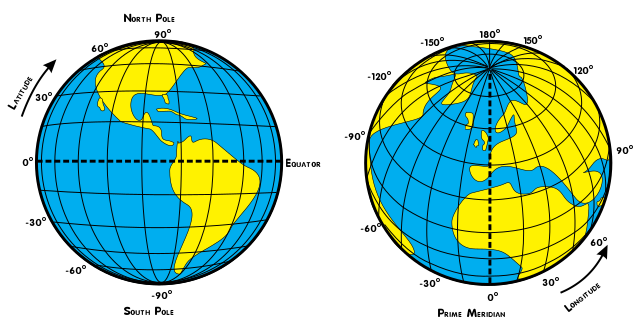
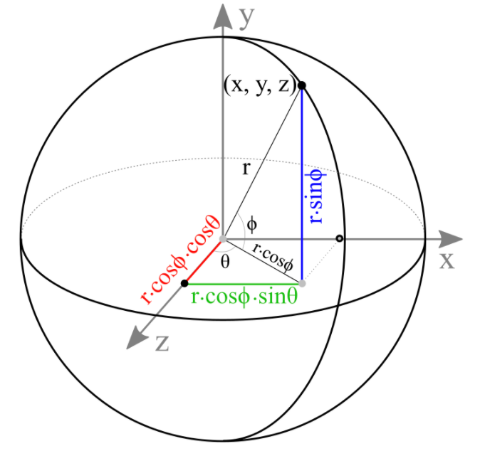

I'm an enthusiastic researcher in Image Processing and Computer Vision. Learning new theories and bringing them to practice is my hobby. My research topics are Pattern Matching, Stereo-Vision Reconstruction, and other Miscellaneous.
Actually, the Earth isn't a pefect sphere, thus for a simple rendering in this article, we assume that it's a sphere so that vertex's coordinate can be easily calculated based on longitude and latitude of the Earth. The longitude ranges from -180 to 180 degree and the Prime meridian or zero degree longitude goes through Greenwich. The latitude ranges from -90 degree to 90 degree.

By choosing step is 1 degree, there are 360 longitudes and 180 latitudes. We can get better resolution by decreasing step size that however results in lower computing performance and rendering.
Now, from every longitude \(\theta\) and latitude \(\phi\), vertex's coordinate \((x,y,z)\) can be calculated as below.

\(y=r \times sin(\phi)\)
\(xz=r \times cos(\phi)\)
\(x=xz \times sin(\theta)\)
\(z=xz \times cos(\theta)\)
Where, \(r=1.0\)
For rendering the Earth with color texture, we also need to calculate the texture's coordinate. For each vertex, the corresponding texture's coordinate is the index of the longitude and the latitude which is normalized from 0->1.0.
B. Calculate Indices
From 4 vertices, two triangles can be formed in counterclockwise ordering as below